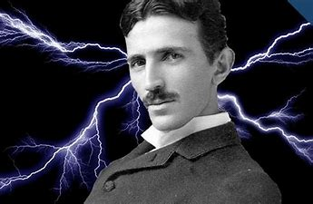

Nikola Tesla

From 1856 to 1943
- Nikola Tesla (/ˈtɛslə/ TESS-lə; Serbian Cyrillic: Никола Тесла, pronounced [nǐkola têsla];[a] 10 July 1856 – 7 January 1943) was a Serbian-American inventor, electrical engineer, mechanical engineer, and futurist best known for his contributions to the design of the modern alternating current (AC) electricity supply system.
- Born and raised in the Austrian Empire, Tesla studied engineering and physics in the 1870s without receiving a degree, gaining practical experience in the early 1880s working in telephony and at Continental Edison in the new electric power industry. In 1884 he emigrated to the United States, where he became a naturalized citizen. He worked for a short time at the Edison Machine Works in New York City before he struck out on his own. With the help of partners to finance and market his ideas, Tesla set up laboratories and companies in New York to develop a range of electrical and mechanical devices. His alternating current (AC) induction motor and related polyphase AC patents, licensed by Westinghouse Electric in 1888, earned him a considerable amount of money and became the cornerstone of the polyphase system which that company eventually marketed.
- Attempting to develop inventions he could patent and market, Tesla conducted a range of experiments with mechanical oscillators/generators, electrical discharge tubes, and early X-ray imaging. He also built a wireless-controlled boat, one of the first-ever exhibited. Tesla became well known as an inventor and demonstrated his achievements to celebrities and wealthy patrons at his lab, and was noted for his showmanship at public lectures. Throughout the 1890s, Tesla pursued his ideas for wireless lighting and worldwide wireless electric power distribution in his high-voltage, high-frequency power experiments in New York and Colorado Springs. In 1893, he made pronouncements on the possibility of wireless communication with his devices. Tesla tried to put these ideas to practical use in his unfinished Wardenclyffe Tower project, an intercontinental wireless communication and power transmitter, but ran out of funding before he could complete it.
- After Wardenclyffe, Tesla experimented with a series of inventions in the 1910s and 1920s with varying degrees of success. Having spent most of his money, Tesla lived in a series of New York hotels, leaving behind unpaid bills. He died in New York City in January 1943. Tesla's work fell into relative obscurity following his death, until 1960, when the General Conference on Weights and Measures named the SI unit of magnetic flux density the tesla in his honor. There has been a resurgence in popular interest in Tesla since the 1990s.
- AC Power (alternating current)
- Tesla Coil
- Magnifying Transmitter
- Tesla Turbine
- Shadowgraph
- Radio
- Neon Lamp
- Hydroelectric Power
- Induction Motor
- Radio Controlled Boat
Some of his most Important Inventions:
Nikola Tesla’s Best-Known Invention — the Alternating Current
When Tesla came to the United States, he worked for Thomas Edison in Manhattan and was promised $50,000 if he could make Edison’s direct current method successful. As it turned out, Edison’s DC current was not as effective as Tesla’s own alternating current method in transmitting electricity over long distances. When Edison reneged on his offer to pay Tesla to solve his DC power design flaws, Tesla quit and moved on to his next endeavor.
He applied for many patents for his AC power discoveries which were later sold to Westinghouse. AC power has been widely used since its discovery and still has some applications in radio and television transmission.
The Tesla Coil
Perhaps the most familiar symbol of Tesla’s work is the Tesla coil, embodied in the tower that was erected at what is now the last remaining laboratory located in Shoreham, New York, the Tesla Science Center at Wardenclyffe. Here, Tesla created a tower topped by his infamous coils which shot electric sparks through the air and circulated the electricity around the coils by alternating current.
Magnifying Transmitter
Building upon the revelations of the Tesla coil, Tesla sought to offer wireless power for free to all by transmitting information from one tower to another using resonance. The currents were sent from one circuit to the other, building in frequency until lightning sparked from one tower to the other. By connecting a wire to the tower and running it around his lab, he powered his laboratory wirelessly. He demonstrated the effect on stage to audiences using light bulbs that were not connected to any power source. The magnifying transmitter succeeded in transmitting an electrical current a kilometer away.
Tesla Turbine
Tesla developed a piston engine to power automobiles using combustion to rotate disks. At the time, commonly used turbines were less efficient and relied on blades. Tesla’s invention merged many disks to create a centrifugal pump. By moving fluid in the path of least resistance, his turbine was more fuel-efficient. His turbine is also known as “…the boundary-layer turbine, cohesion-type turbine, and Prandtl-layer turbine it uses the boundary-layer effect and not a fluid impinging upon the blades as in a conventional turbine.”
Smooth disks with nozzles circulate fluid around the edge of the disk. As the disk spins, the fluid adheres to the edge of the disk and is drawn from the edge of disk to the center. It works by adhesion rather than friction, resulting in greater efficiency.
The Shadowgraph
The Shadowgraph is another name for x-rays, but Tesla’s term is actually more depictive of the process. An x-ray creates a silhouette of the area captured by passing radioactive waves through the human body. Although the invention was initially developed by Rontgen, Tesla made improvements to the technique to render clearer images.
Radio
Before his lab burned down, Tesla was working on developing a radio intended to transmit a signal fifty miles. Prior to its completion, however, another gentleman received a patent for a similar radio design in England. Had he succeeded, Nikola Tesla’s invention would have surpassed the Brit’s invention in strength.
Neon Lamp
The neon lamp (or sign) was Tesla’s modification of existing neon light technology to form words and designs. Neon signs continue to exist worldwide, lighting up bars, casinos, hotels, and other signs along the roadway.
Hydroelectric Power
The Niagara Falls Commission selected Tesla to design the hydroelectric power generator at Niagara Falls using his alternating power technology. Considered the first power plant, Tesla’s technology was used throughout the world to provide electricity to the masses.
Induction Motor
Using electromagnets to spin, Tesla’s induction motor currently powers everyday household items such as vacuums, hairdryers and power tools.
Radio-controlled Boat
Tesla used radio transmission to power the first radio-controlled toy boat, controlling its engine, lighting and steering with a remote control. Today’s drones are based on this technology. While some viewed his invention as a contribution to warfare, i.e. torpedoes, Tesla considered it the beginning of robotic technology which would eventually handle the majority of labor for man.
Many of Nikola Tesla’s inventions went unrecognized, others lost when his notes were destroyed by fire. At the end of his life, his research was confiscated by the FBI, and only in recent years has it been made available to the public. Read more about Nikola Tesla on Wikipedia
A tribute to the great inventor by Harshil Parikh